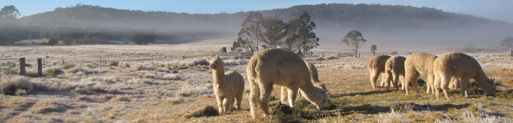

Alan Jinks Trophy
Most Valuable Commercial Fleece at the AAA National Show, won by Monga Mustang.
AAA honour board
Breeding stock, stud services and friendly wethers, from an established Huacaya stud with a long show record.
Building or improving a Huacaya herd. Monga has bred for fineness and density for over a decade, and the results are on the record below.
Prices on enquiry. Or ring Bob on 0488 292 835.
Wethered males make good-natured guards for sheep and poultry, keep the grass down, and are easy company.
Prices on enquiry. Or ring Bob on 0488 292 835.
Most of Monga’s best fleeces trace back to one male, Monga Khan, by Belbourie Titan. His sons and daughter have gone on to win in their own right. Stud services are on farm only.

Fees and availability change through the season. Call Bob to talk through your females and what you’re breeding for.
Monga has shown fleeces and animals since the early 2010s, mostly at Royal Canberra, Sydney Royal and AAA national events. Each result below links to the published show report or official results it comes from.
Most Valuable Commercial Fleece at the AAA National Show, won by Monga Mustang.
AAA honour boardSupreme Champion Huacaya Fleece at the AAA National Fleece Challenge, won by Monga Chalina.
Official resultsSupreme Champion Huacaya Fleece for Monga Columbus, and the Dr Jim Watts Trophy for highest-scoring fleece.
RAS NSW results| Year | Show | Animal | Award | Source |
|---|---|---|---|---|
| 2013 | Royal Canberra | Monga Ambrose | Supreme Champion Huacaya Fleece. Monga won five of the six Huacaya fleece championships and was named Most Successful Huacaya Fleece Exhibitor. | Alpacas Australia, Winter 2013 |
| 2014 | Royal Canberra | Monga Khan | Supreme Champion Huacaya Fleece; Most Commercial Huacaya Fleece. Most Successful Exhibitor again. | Alpacas Australia, Winter 2014 |
| 2015 | Royal Canberra | Monga Atticus | Supreme Huacaya Fleece | Alpacas Australia, Winter 2015 |
| 2015 | Royal Canberra | Monga Khan | Most Valuable Commercial Fleece | Alpacas Australia, Winter 2015 |
| 2016 | Royal Canberra | Monga Khan | Supreme Huacaya Fleece | Alpacas Australia, Winter 2016 |
| 2018 | Charles Ledger | Monga Nimbus | Champion Senior Huacaya Male | eAlpaca show results |
| 2018 | Charles Ledger | Monga Chalina | Champion Junior Huacaya Female | eAlpaca show results |
| 2019 | AAA National | Monga Mustang | Most Valuable Commercial Fleece, Alan Jinks Trophy | AAA trophy honour board |
| 2019 | Royal Canberra | Monga Nimbus | Supreme Champion Huacaya Fleece | eAlpaca show results |
| 2019 | Charles Ledger | Monga Mustang | Supreme White Huacaya Fleece | eAlpaca show results |
| 2020 | National Fleece Challenge | Monga Chalina | Supreme Champion Huacaya Fleece; Champion Senior; Champion White | Official results catalogue |
| 2020 | Royal Canberra | Monga Channing | Supreme Champion Huacaya Fleece; Best White Huacaya Fleece | eAlpaca show results |
| 2020 | Gunning | Ambersun Marksman | Supreme Huacaya (halter) | Alpacas NSW magazine |
| 2021 | Highlands | Monga Mustang | Champion Mature Huacaya Male; Best White Huacaya | eAlpaca show results |
| 2023 | Sydney Royal | Monga Channing | Champion Huacaya Skirted Fleece, 48–60 months | RAS NSW official results |
| 2024 | Sydney Royal | Monga Columbus | Supreme Champion Huacaya Fleece. Dr Jim Watts Perpetual Trophy to the stud. | eAlpaca show results RAS NSW trophy list |
| 2026 | Gunning | Monga Uther | Champion Intermediate Huacaya Male | eAlpaca show results |
Sources are the Australian Alpaca Association’s magazines, honour board and results catalogues, the Royal Agricultural Society of NSW’s official results, and eAlpaca, the AAA’s show results database (some eAlpaca results are marked preliminary). Age-class championships and reserve placings are not listed here.


Not every alpaca needs to be a show champion. Some are better suited to a quiet life on a few acres.

Bob is a retired engineer who runs the stud and still treats every fleece like a measurement problem. He has written a series of short papers for fellow breeders on density, fibre counts and what the numbers on a fleece test do and don’t tell you.
He’s happy to talk alpacas, whether you’re after a herd sire or two wethers for the back paddock. Visits are by arrangement.